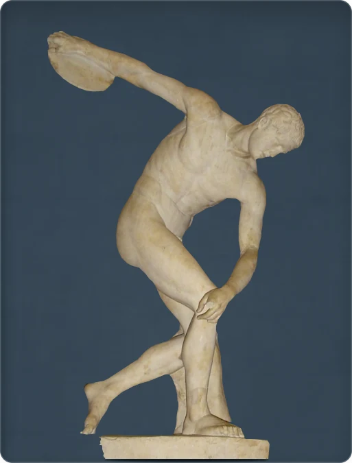

Discobole

L’instant qui précède le lancer
Dans le Discobole, l’athlète retient son mouvement juste avant le lancer du disque. Cette copie romaine en marbre reprend un bronze grec aujourd’hui perdu, attribué à Myron au Ve siècle av. J.-C. Le torse se plie tandis que le bras décrit un large arc. La tête a été mal orientée lors d’une restauration : elle devrait se tourner vers le disque.
IIe siècle ap. J.-C. · marbre · British Museum, Londres · inv. 1805,0703.43
Notice : British Museum →
Source complémentaire : Musée d’archéologie classique de Cambridge
Crédit photographique
Photo : Valerio Perticone / Wikimedia Commons · CC BY-SA 3.0 · fond modifié
Licence de l’image modifiée : CC BY-SA 3.0

Du torse au bras
Suivez d’abord la courbe du torse, puis l’arc du bras. Le torse donne un axe pour situer le corps. Le bras fait deviner la trajectoire du geste. Observez comment ces deux directions se répondent. Leur association permet de lire la pose comme un mouvement en train de se préparer.
Repérez le disque, puis arrêtez votre regard sur la main. Le disque appartient encore à la pose que montre la sculpture, tandis que sa trajectoire reste à imaginer. C’est cet intervalle qui donne son sens au geste. On comprend ce que l’athlète s’apprête à faire en observant la façon dont il retient encore son mouvement.
L’orientation de la tête
La notice signale une difficulté liée à la restauration. Selon la description, la tête devrait se tourner vers le disque. Commencez par observer son orientation sur la photographie et revenez ensuite au bras. Comparez les directions du visage et du geste et voyez ce qui change.
Imaginez ensuite la tête tournée vers le disque, en gardant en mémoire la pose qui figure sur l’image. Est-ce que votre regard suit plus facilement le mouvement dans cette configuration ? Cette comparaison aide à comprendre pourquoi un détail de restauration compte pour l’interprétation d’une sculpture dont le sujet est un geste.
Lire la copie en marbre
Le marbre de la notice est une copie romaine. L’attribution à Myron concerne le bronze grec perdu dont elle reprend la composition. En gardant ces deux œuvres distinctes, vous pouvez décrire les détails que vous voyez dans le marbre et situer avec précision l’œuvre grecque à laquelle la pose est rattachée.
La notice renvoie au British Museum pour le marbre et cite le musée d’archéologie classique de Cambridge en complément. Après avoir observé la courbe du torse et l’arc du bras, vous pouvez utiliser ces références pour situer la copie. Relisez notamment la date donnée pour le marbre et le siècle auquel est rattaché le bronze.